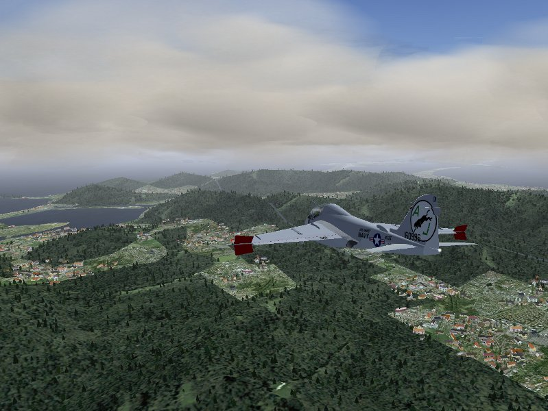
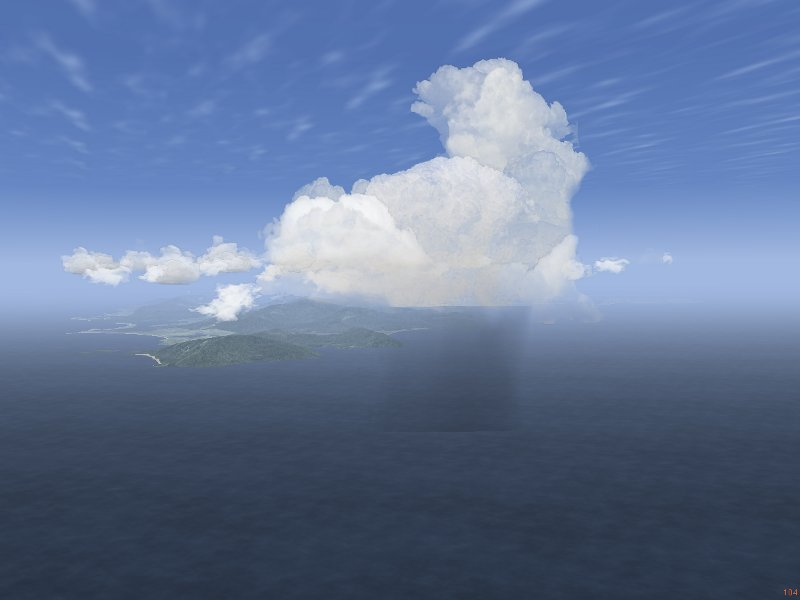

This is in contrast to the current (v.2.0.0) weather system of Flightgear where weather changes affect the weather everywhere in the simulated world and are (with few exceptions) not tied to specific locations. In such a system, it is impossible to observe e.g. the approach of a rainfront while flying in sunshine.
The local weather package ultimately aims to provide the functionality to simulate such local phenomena. In version 0.5, the package supplies various cloud placement algorithms, as well as local control over most major weather parameters (visibility, pressure, temperature, rain, snow, thermal lift...) through interpolation routines and event volumes. However, basically all features currently present can and will eventually be improved.
As of version 0.5, the system does not contain dynamics (development of convective clouds, wind displacement of clouds...). Since wind and dynamics are closely related, any wind parameters can currently not be controlled from the local weather algorithms.
This adds the items Local Weather and Local weather tiles to the Environment menu when Flightgear is up. The central functionality is contained in local_weather.nas which is loaded at startup and identifies itself with a message, but does not start any functions unless called from the GUI.
The first menu contains the low level cloud placement functions. Currently four options are supported: Place a single cloud, Place a cloud streak, Start the convective system, Create barrier clouds and Place a cloud layer.
The algorithm as called from the menu assumes that the streak center is the current position. x and y are the primary grid directions. number x (y) are the number of clouds to be placed in these directions, Delta x (y) the spacing between clouds along these directions. x (y) edge describes the fraction of the pattern to be taken by one border filled with small clouds. Since the pattern has borders from two sides, a fraction of 0 means that only large clouds are placed, a fraction of 0.5 that only small clouds are placed, anything inbetween corresponds to a transition. Dir is an angle by which the whole pattern is rotated. Finally, Triang. allows the distortion of the pattern into a trapezoid shape in which one side is by Triang. larger than the other.
The pattern can then be randomized in x, y and altitude. Basically, specifying no grid spacing but large randomization scales corresponds to a random placement of clouds in the sky, whereas randomization scales lower than the grid spacing preserve the grid structure, and the algorithm allows to interpolate between these extremes.

Clouds are placed in a constant altitude alt (this is going to be changed in the future) in a tile with given size where the size measures the distance to the tile border, i.e. a size parameter of 15 km corresponds to a 30x30 km region. Clouds are placed with constant density for given terrain type, so be careful with large area placements! strength is an overall multiplicative factor to fine-tune.

Currently, the algorithm does not check for a barrier upstream - this will change in future versions. The ufo is a good way to explore the results of the algorithm by simply flying to a suitable location and calling it there for a relatively small region.
If rainflag is set to 1, the system will also place external precipitation models (i.e. visible rain layers), roughly at the transition between edge and core of the cloud placement region with a density given by rain dens.. The system will however not place an effect volume which would lead to the actual simulation of rain below the layer - this must be done separately by the user.
The picture illustrates the result of a layer generation call for Nimbostratus clouds with precipitation models.


The dropdown menu is used to select the type of weather tile to build. In addition, two parameters can be entered. The first is the tile orientation. Some tiles, most notably incoming fronts, have a direction along which the weather changes. The tiles are set up in such a way that fronts come from north, changing orientation rotates the whole tile to the specified direction. As soon as wind is implemented in the local weather system, the tile orientation will essentially also govern the wind direction (clearly, there is a relation between from where a front comes and the wind direction).
The second parameter, the altitude offset, is as of now a provisorium. Cloud layer placement calls are specified for absolute altitudes and calibrated at sea level. As a result, layers are placed too low in mountainous terrain. Eventually, the system is to receive a terrain presampling function to determine just where exactly low cloud layers should be placed when a weather tile is set up. Until this is in place, the user must manually specify a suitable altitude offset for all cloud layers.
The following pictures show the results of tile setups 'Incoming rainfront' and 'Summer rain':


Currently all clouds which need to be rotated are treated in the Shaders using a view-axis based rotation by two angles. This generally looks okay from a normal flight position, but rapid change of the view axis (looking around), especially straight up or down, causes unrealistic cloud movement. Any static picture of clouds however is (almost) guaranteed to look fine.
The idea is that the interpolation system takes care of slow, large-distance scale changes of weather whereas the effect volume system models rapid, small-scale changes. Thus, the gradual drop in visibility when flying into a more humid air mass is dealt with by the interpolation system whereas the sudden drop in visibility when entering a cloud is modeled as an effect volume. It doesn't make sense to have both systems available for all weather parameters, for example pressure can't change suddenly and discontinuously. Consequently the effect volume system does not support pressure.
While the station concept is designed to support easy connection with weather updates from real METAR stations, stations do not need to be real stations, and each weather tile creation call by default writes its own station at the center of the tile, so weather tiles can be different and the weather will change smoothly between them.
Technically, the structure of the interpolation system means that while it is running, neither setting weather parameters in the standard menu nor changing visibility using the z-key will have an effect - any setting made there will be overwritten periodically. Only changing the relevant properties (see below) will have the desired effect.
Effect volumes may be nested, and they may overlap. The rules determining their behaviour can be summarized as follows: 1) there is no cross-talk between weather parameters, i.e. an effect volume specifying visibility is never influenced by one specifying pressure, regardless if they overlap or not. 2) when an effect volume is entered, its settings overwrite all previous settings 3) when an effect volume is left, the settings are restored to what the interpolation routine specifies if no other effect volumes influence the weather parameter, to the values as they were on entering the volume when the number of active volumes has not changed between entering and leaving the volume (i.e. when volumes are nested) or nothing happens if the number of active volumes has increased (i.e. when volumes form a chain). This is illustrated in the following figure:

Volumes 2 and 3 are nested inside volume 1, therefore all settings of 2 overwrite those of 1 when 2 is entered and are restored to 1 when region 2 is left directly into 1. Region 4 is a chain, and as such ill defined: When one leaves 2 into 4, the settings of volume 3 are used (because later definitions overwrite earlier ones). When one now leaves 4 into 3 (and hence leaves 2), it would be wrong to restore to the values on entry of 2 (i.e. the properties of 1), as 3 is still active. But the active volume count has changed, so leaving 4 into 3 does not lead to any changes. The reason why 4 is still ill-defined is that what weather is encountered in 4 depends on the direction from which it is entered - when it is entered from 2, it has the properties of 3, whereas when it is entered from 3, it has the properties of 2.
Effect volumes are always specified between a minimum and a maximum altitude, and they can have a circular, elliptical and rectangular share (the last two rotated by an angle phi). Since it is quite difficult to set up event volumes without visual reference and also not realistic to use them without the context of a cloud or precipitation model, there is no low-level setup call available in the menu. Effect volumes can be created with a Nasal call
create_effect_volume(geometry, lat, lon, r1, r2, phi, alt_low, alt_high, vis, rain, snow, turb, lift, lift_flag);
where geometry is a flag (1: circular, 2: elliptical and 3: rectangular), lat and lon are the latitude and longitude, r1 and r2 are the two size parameters for the elliptic or rectangular shape (for the circular shape, only the first is used), phi is the rotation angle of the shape (not used for circular shape), alt_low and alt_high are the altitude boundaries, vis, rain, snow, turb and lift are weather parameters which are either set to the value they should assume, or to -1 if they are not to be used, or to -2 if a function instead of a parameter is to be used. Since thermal lift can be set to negative values in a sink, a separate flag is provided in this case.
The local-weather folder contains various subdirectories. clouds/ contains the record of all visible weather phenomena (clouds, precipitation layers, lightning...) in a subdirectory cloud[i]/. The total number of all models placed is accessible as local-weather/clouds/cloud-number. Inside each cloud/ subdirectory, there is a string type specifying the type of object and subdirectories position/ and orientation which contain the position and spatial orientation of the model inside the scenery. Note that the orientation property is obsolete for clouds which are rotated by the shader.
The local-weather/effect-volumes/ subfolder contains the management of the effect volumes. It has the total count of specified effect volumes, along with the count of currently active volumes for each property. If volumes are defined, their properties are stored under local-weather/effect-volumes/effect-volume[i]/. In each folder, there are position/ and volume/ storing the spatial position and extent of the volume, as well as the active-flag which is set to 1 if the airplane is in the volume and the geometry flag which determines if the volume has circular, elliptical or rectangular shape. Finally, the effects/ subfolder holds flags determining of a property is to be set when the volume is active and the corresponding values. On entry, the effect volumes also create a subfolder restore/ in which the conditions as they were when the volume was entered are saved.
local-weather/interpolation/ holds all properties which are set by the interpolation system, as well as subfolders station[i]/ in which the weather station information for the interpolation are found. Basically, here is the state of the weather as it is outside of effect volumes. Since parameters may be set to different values in effect volumes, the folder local-weather/current/ contains the weather as the local weather system currently thinks it should be. Currently, weather is actually passed to the Flightgear environment system through several workarounds. In a clean C++ supported version, the parameters should be read from here.
The first important call sets up the conditions to be interpolated:
set_weather_station(latitude, longitude, visibility-m, temperature-degc, dewpoint-degc, pressure-sea-level-inhg);
The cloud placement calls should be reasonably familiar, as they closely resemble the structure by which they are accessible from the menu. Note that for (rather stupid reasons) currently a randomize_pos call must follow a create_streak call.
If the cloud layer has an orientation, then all placement coordinates should be rotated accordingly. Similarly, each placement call should include the altitude offset. Take care to nest effect volumes properly where possible, otherwise undesired effects might occur...
To make your own tile visible, an entry in the menu gui/dialogs/local_weather_tiles.xml needs to be created and the name needs to be added with a tile setup call to the function set_tile in Nasal/local_weather.nas.
* Some cloud textures have artefacts, rain textures have too sharp boundaries and in general some things could look better. Please don't complain, but rather get me good photographs of the sky, cloud texture files or create better AC3D cloud models. I will eventually improve texture quality, but it's not high up in the to-do list, and the cloud model files are openly accessible for anyone with an editor.
* Rain and snow may not start properly. For me, rain is only generated when I switch 'Shader effects' on and off in the menu on startup, otherwise neither moving the menu slider nor entering an effect volume generate rain. This seems to be a bug of some Flightgear versions, not of the local weather system.
Thorsten Renk, April 2010